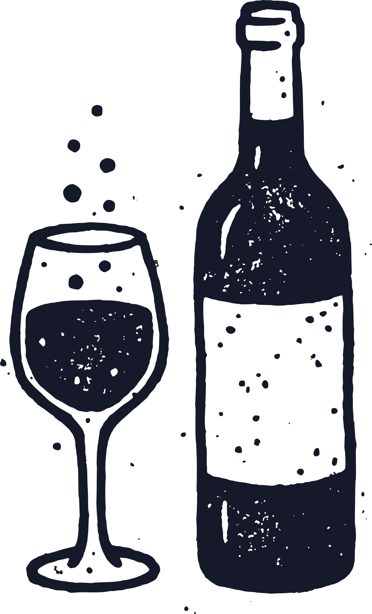

Guten Tag. Was war los am Tresen?
Der Chat unten rechts auf eurer Website antwortet Gästen Tag und Nacht. Hier lest ihr, was gefragt wurde, seht, was auf der Website noch fehlt, und lasst euch Antworten auf Anfragen vorschreiben.
–Fragen gesamt
–nicht auf der Website
–mit Tischwunsch
–in anderer Sprache
Das wurde gefragt
Steht nicht auf der Website
Diese Fragen konnte der Chat nicht aus eurer Website beantworten. Schreibt die Antwort einmal im Studio als häufige Frage, dann kennt sie ab dem nächsten Veröffentlichen auch der Chat.
Anfragen beantworten
Die Anfrage
Was die Antwort sagen soll (wenn ihr mögt)
Der Entwurf
Hier steht gleich der Entwurf. Ihr lest ihn, ändert, was nicht passt, und schickt ihn selbst aus eurem Mailprogramm.
Der Tresen verschickt nichts. Jede Antwort geht erst raus, wenn ihr sie selbst abschickt.